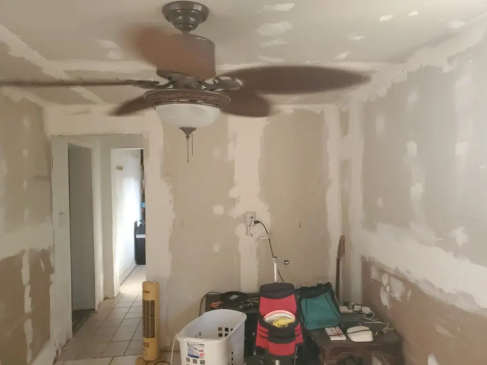

Texture matching
Orange peel, knockdown, and skip-trowel blending so patches do not telegraph through paint.
Texture matching
Orange peel, knockdown, and skip-trowel blending so patches do not telegraph through paint.
Texture patterns common in Pinellas County
Homes from the seventies through today use different spray and trowel methods — matching requires samples and patience.
- Light and heavy orange peel on living areas
- Knockdown flattened with wide knives after spray
- Skip-trowel Mediterranean finishes near coasts
- Smooth skim coats in modernized condos
- Popcorn removal patches on older ceilings
- Vaulted ceiling repairs with ladder staging
- Garage fire-separation texture continuity
- Blend zones feathered beyond patch borders
Lighting checks before sign-off
We view blends with work lights at angles that mimic afternoon sun through lanai doors — the test most DIY patches fail. Paint follows once texture is dry and stable.
Texture matching so patches vanish after paint

Orange peel, knockdown, and skip-trowel finishes each require different tools and timing. Knight Group blends texture matching drywall repairs into existing ceilings and walls so raking light does not reveal patch borders.
Texture types we blend
- Light and heavy orange peel with hopper or aerosol methods
- Knockdown patterns after mud flattening passes
- Skip-trowel and Mediterranean-style swirls where samples exist
- Smooth-wall skim when adjacent areas are already flat
- Ceiling repairs around fans, cans, and HVAC registers
Sampling and lighting checks

We test blend areas before full paint when color is critical. Wet mud reads differently than dried texture — experience matters on vaulted ceilings common in Florida tract homes.
Works with
Drywall repair, hole in wall repair, interior painting.
Ceiling texture blends in Pinellas tract homes

Vaulted great rooms in Palm Harbor developments show patch borders under afternoon sun — we feather wider on ceilings than walls. Popcorn removal patches in 1970s Seminole condos need asbestos awareness; we stop when suspicious materials require testing.
Garage-to-house fire separation ceilings must maintain continuity — noted on scopes for inspection-conscious owners.
Texture matching consultations
Photograph existing wall and ceiling texture in raking light if possible. Large ceiling repairs should note vaulted areas — staging time is included in written scopes.
Frequently asked questions
Common questions homeowners ask before booking this type of work in Pinellas County.
Can you match knockdown ceiling texture?
Yes — knockdown is common in Pinellas County homes and is blended with appropriate tools and timing.
Will texture matching work on walls and ceilings?
Both — technique depends on existing pattern and scale of repair.
Do I need texture before painting?
Yes when existing surfaces are textured — skipping texture makes patches obvious after paint.
Can you fix texture after a ceiling fan swap?
Yes — fan openings often need targeted texture blending.
What if my texture is outdated?
We can match existing texture for repairs even if you plan broader remodeling later.
Does texture matching include paint?
Texture is typically paired with priming and paint in combined scopes — specify when requesting a quote.


Ready to schedule?
Tell us what needs attention and where the property is located.